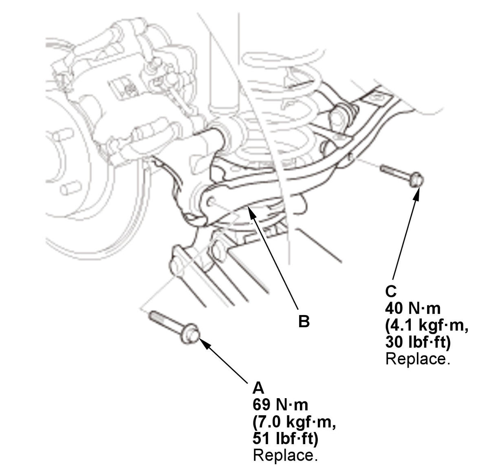

Rear Spring Removal and Installation: Installation
- Spring - Install
1. Install the upper rubber mount (A) on the spring (B) by aligning the upper end (C) of the spring with the ledge portion (D) of the upper rubber mount. 2. Install the lower rubber mount (A) on the spring (B) by aligning the lower end (C) of the spring with the ledge portion (D) of the lower rubber mount. 3. Install the tabs (A) of the lower rubber mount into the grooves (C) of the lower arm B and install the spring assembly.
NOTE:- Make sure that the tab of the lower rubber mount is properly installed into lower arm B.
- Make sure that the spring was installed correctly.

Courtesy of HONDA, U.S.A., INC.4. Slowly raise the floor jack until you align the bolt hole with the holes in lower arm B and the knuckle. 5. Loosely install new lower arm B mounting bolt (A) and the new stabilizer link lower mounting bolt (C) but do not tighten it.
6. Load the suspension with the vehicle's weight, and tighten the bolts to the specified torque.
NOTE: If the rear lower arm B was removed or replaced from another procedure, tighten the adjusting bolt at the same time.
- Rear Wheel - Install
- Wheel Alignment - Check